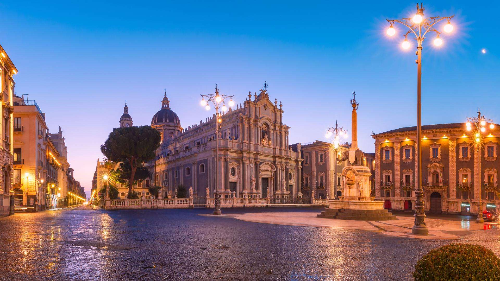

Benvenuti in un percorso dedicato alle piazze più belle e significative della Sicilia. Luoghi di incontro, di storia e di vita quotidiana, le piazze siciliane racchiudono secoli di arte, cultura e tradizione. Questo progetto nasce dal desiderio di valorizzare e far conoscere questi spazi straordinari, custodi dell'identità isolana.